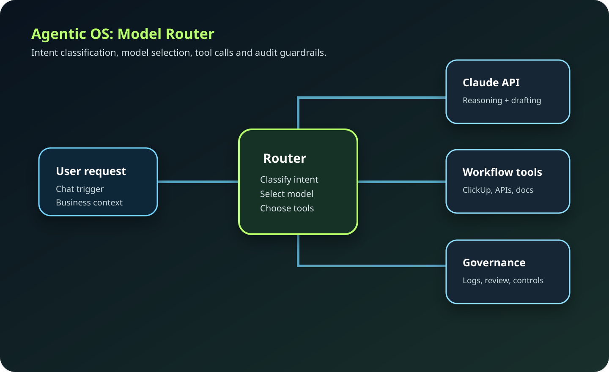
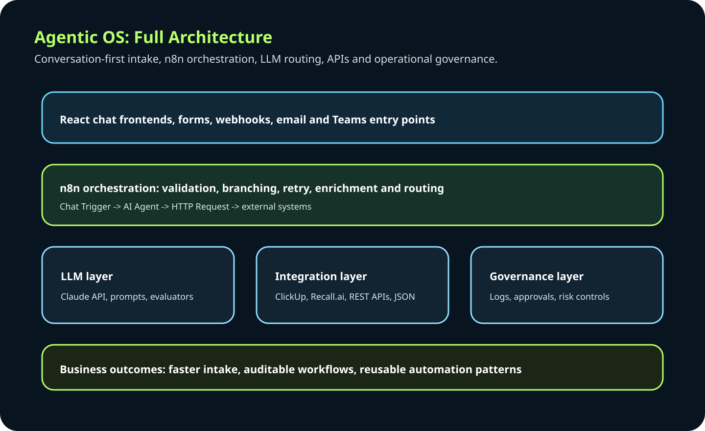

Agentic OS - Model-Agnostic Automation Control Plane
Design & MVPLeading the design of a model-agnostic orchestration platform that enables organisations to automate complex workflows using interchangeable AI agents. The platform acts as a control plane for enterprise automation - dynamically composing reusable agents, selecting models based on context and cost, and governing execution through human-in-the-loop oversight.
Problem
Most enterprise AI initiatives fragment quickly. Solutions get locked to a single LLM provider. Automation is rebuilt for every use case. Governance and security are bolted on after deployment. Scaling AI across departments becomes slow and expensive.
Solution Architecture

Key Components
- Agent Warehouse - Catalogue of reusable, versioned agents for cross-enterprise deployment
- Model Router - Dynamic model selection based on capability, latency and token cost
- Capability Declaration Interface - Agents declare required tools, APIs and permissions before execution
- Meta-Agent Lifecycle - Specialised agents monitor performance, suggest upgrades, improve automation continuously
- Security & Ethics Oversight - Governance agents that research patches, validate policies, enforce safe automation
- n8n Automation Fabric - Integration layer for scalable workflow execution and API orchestration
Full System Architecture

My Contribution
Defined the architecture vision and high-level design. Established governance and capability declaration patterns. Designed the agent warehouse and lifecycle model. Led cross-functional alignment from executive stakeholders through to engineering teams. Directed the orchestration strategy using n8n and model-agnostic routing.